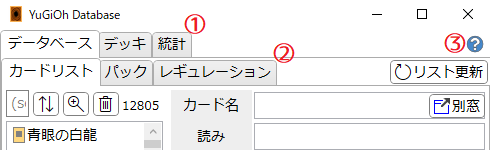
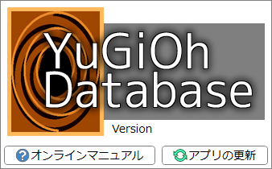
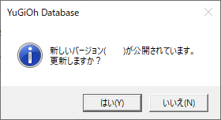
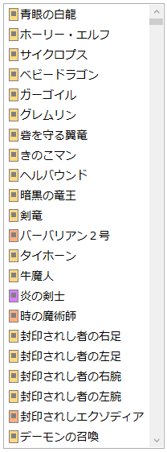
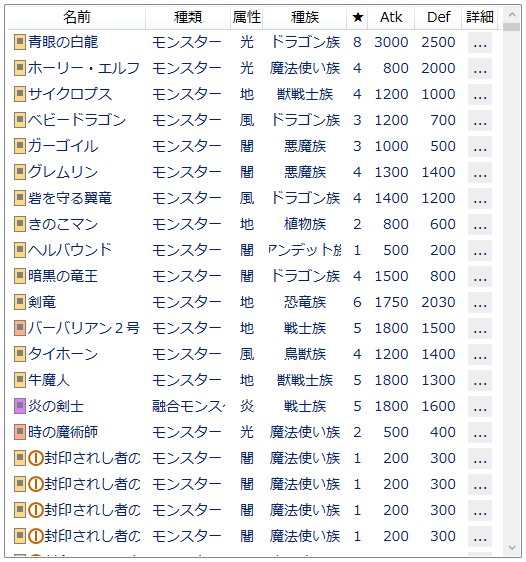
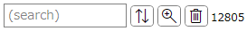
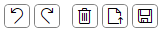

基本操作
「YuGiOh Database」における共通操作について説明します。
メインウィンドウ

- メインタブ
-
サブタブ
-
タブヘッダーをクリックするとそのタブを開きます。
- タブヘッダー部分でマウスホイールを回すことでも切り替えることができます。
-
タブヘッダーをクリックするとそのタブを開きます。
-
ヘルプボタン
-
クリックすると下のような画面が開きます。

- 「オンラインマニュアル」: このサイトを開きます。
-
「アプリの更新」: 「YuGiOh Database」の更新をチェックし、更新があればその旨を表示します。
-
このボタンをクリックしなくても、起動時には毎回自動的にアップデートの確認を行いますが、以下の確認画面で「いいえ」を押した場合、次に「アプリの更新」ボタンを押すまで、自動更新確認が無効になります。

-
このボタンをクリックしなくても、起動時には毎回自動的にアップデートの確認を行いますが、以下の確認画面で「いいえ」を押した場合、次に「アプリの更新」ボタンを押すまで、自動更新確認が無効になります。
-
クリックすると下のような画面が開きます。
リストビュー


- カードなどを一覧するリストビューには、シンプルビュー(画像左)とグリッドビュー(画像右)があります。
-
グリッドビューでは、ヘッダー(「名前」などが書かれている部分)をクリックすると、それを基準として項目をソートします。
- ソートを解除(ID順にソート)したい場合は「詳細」のヘッダーをクリックしてください。
-
複数選択が不可能なリストビューでは:
- Shiftキーを押しながら項目をクリックすると、山括弧《》で囲ったカード名がクリップボードにコピーされます。
-
複数選択が可能なリストビュー(「デッキ/デッキ編集」など)では:
- Ctrlキーを押しながら項目をクリックすると複数選択を行います。
- Shiftキーを押しながら項目をクリックすると範囲選択を行います。
- Altキーを押しながら項目をクリックすると、山括弧《》で囲ったカード名がクリップボードにコピーされます。
- Ctrl+Aですべての項目を選択します。
サーチバー

- このサーチバーの下にあるリストの内容の絞り込みや並べ替えを行います。
- サーチバーによっては一部のボタンが存在しない場合があります。
-
テキストボックスに入力してEnterを押すとテキスト検索を適用します。
詳しくは検索ウィンドウ/文字列検索を参照してください。 -
 : ソートウィンドウを開きます。
: ソートウィンドウを開きます。
-
 : 検索ウィンドウを開きます。
: 検索ウィンドウを開きます。
-
 : 絞り込みを解除します。
: 絞り込みを解除します。
- サーチバーの右端には、現在そのリストに表示されている項目の数が表示されます。
エディットバー

- そのタブでの編集に関する操作を行うボタン群です。
-
: 最後に行った編集操作を元に戻します。
- このタブ内の要素にフォーカスがある状態でCtrl+Zを押すことでも元に戻します。
-
: 最後に元に戻した編集操作をやり直します。
- 元に戻す以外の操作を一度でも行うとやり直しはできなくなります。
- このタブ内の要素にフォーカスがある状態でCtrl+Yを押すことでもやり直します。
-
: 編集中の内容を全て削除します。
-
: .jsonファイルを読み込んで、その内容を反映します。
- .jsonファイルの内容がそのタブで編集されている項目として解釈できない場合は何もしません。
- エディットバーが存在するタブを開いている場合、そこへ外部から.jsonファイルをドラッグ&ドロップすることでも開けます。
- : 編集中の内容を.jsonファイルとして保存します。